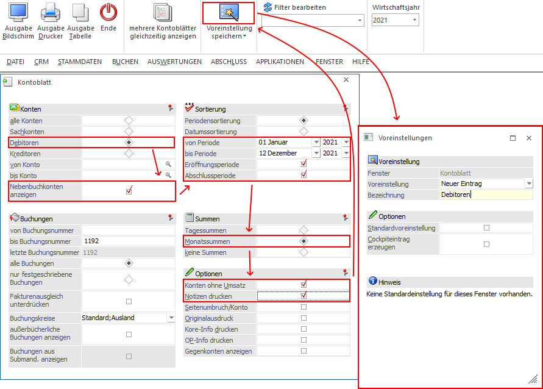

Um eine Voreinstellung zu erzeugen, muss zunächst ein Fenster geöffnet werden, in welchem der Voreinstellungs-Buttons zur Verfügung steht.
Im Anschluss daran werden in dem Fenster alle Selektion und Einstellungen (inklusive Filterauswahl) getätigt, welche benötigt werden. Da von der WinLine alle Tastatureingaben und Mausklicks ausgewertet und an die Voreinstellung übergeben werden, sollte hierbei folgendes beachtet werden:
ü Eine Voreinstellung sollte immer in einem neu gestarteten Fenster erzeugt werden, d.h. nicht in einem Fenster, in welchem z.B. schon 10 Ausgaben vorab getätigt wurden.
ü Es sollten all jene Selektionen bzw. Einstellungen angesprochen werden, welche für die Voreinstellung notwendig sind.
ü Um einen höchstmöglichen Grad an Sicherheit zu gewähren, werden die Anwahl von Buttons oder Registerwechsel zwar in die Voreinstellung übernommen, aber beim Laden nicht ausgeführt! Ist dieses gewünscht, so kann die Voreinstellung über Voreinstellungen bearbeiten angepasst werden.
ü In der Regel sollten Selektionsfelder wie "Buchungsnummer" oder "Journalnummer" nicht angewählt werden, da sich die Nummern ständig verändern und der Inhalt somit nicht an die Voreinstellung übergeben werden soll.
Nachdem alle Eingaben getätigt wurden, wird der Button "Voreinstellungen speichern" angewählt, wodurch sich das Fenster Voreinstellungen im Modus "Speichern" öffnet. Dort kann der Voreinstellung noch ein Name zugewiesen werden.
Beispiel
Im Kontoblatt werden nacheinander die notwendigen Felder angewählt. Die Felder "Buchungsnummer von" und "Buchungsnummer bis" werden dabei bewusst ausgelassen, da sich die Buchungsnummer ständig verändert. Zum Abschluss wird der Button "Voreinstellungen speichern" ausgewählt.
